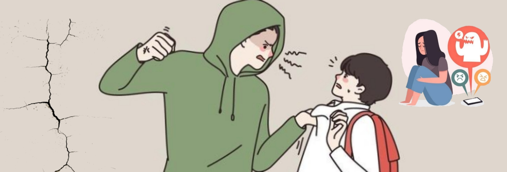

Problematicas o Denuncias
Los alumnos prodran informar de Problematicas o hacer Denuncias de cosas que ocurren en el colegio directamnete atravez de WhatsApp, Esta prodran ser anonimas para proteger al alumno y se dara un seguimiento a la misma